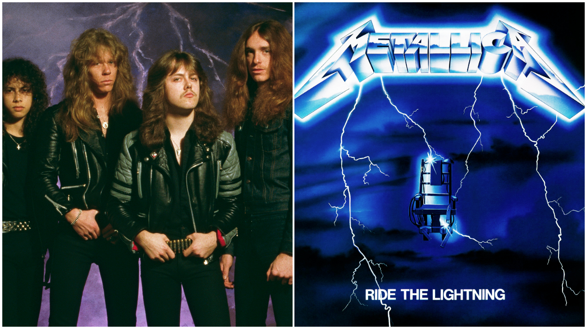
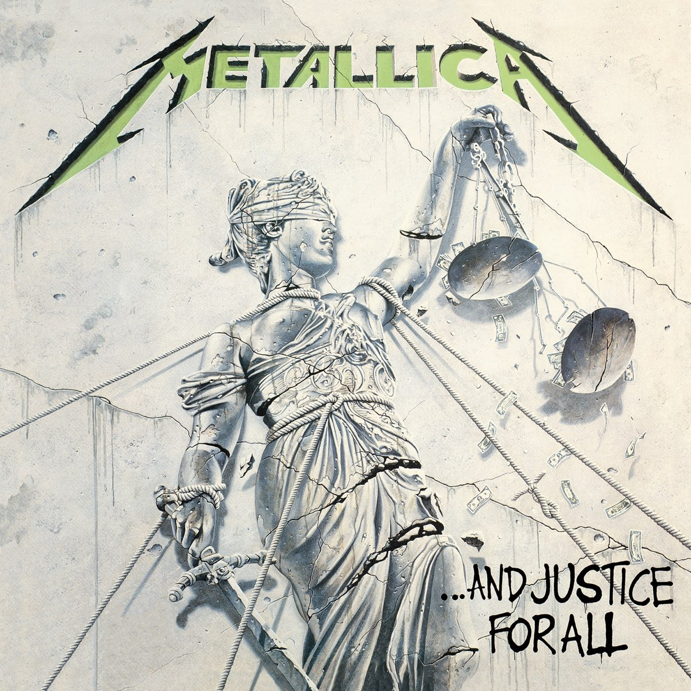
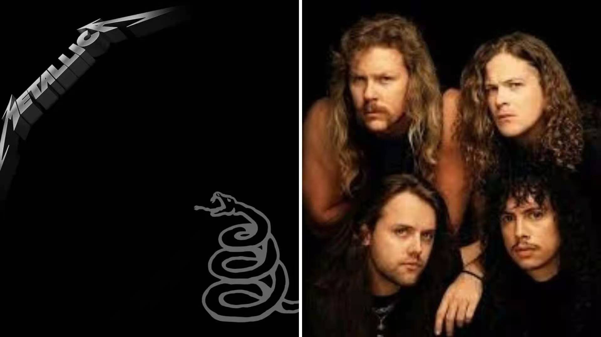

Discografia
Álbumes de estudio
- Kill 'Em All (1983)
- Ride the Lightning (1984)
- Master of Puppets (1986)
- ...And Justice for All (1988)
- Metallica (1991)
- Load (1996)
- ReLoad (1997)
- St. Anger (2003)
- Death Magnetic (2008)
- Hardwired... to Self-Destruct (2016)
Kill 'Em All
A principios de 1983, el mánager y promotor de conciertos Johnny Zazula (con la ayuda de su mujer) se puso en contacto con el grupo para ofrecerles un traslado a Nueva York, con la idea de organizar varios conciertos en la Costa Este y, si todo marchaba bien, grabar un álbum. Tras aceptar la oferta, Metallica inició el viaje el 1 de abril, y tras atravesar todo el país, fijaron su nuevo lugar de residencia en el Music Building de Nueva York, un edificio en el que cohabitaban con varias bandas de rock, entre las que se encontraba Anthrax, iniciando amistad y camaradería entre los dos grupos.
A los diez días de su llegada a Nueva York, la situación con Mustaine se hizo insostenible, con lo que Hetfield y Ulrich sorprendieron a un Mustaine recién despierto para anunciarle que estaba fuera del grupo y que en un breve plazo salía el autobús que habían reservado para su vuelta a casa (posteriormente Dave fundaría Megadeth). Los integrantes ya estaban preparados para esto. Le pidieron a Zazula que se pusiese en contacto con el guitarrista de Exodus, Kirk Hammett, para unirse a la banda. Al principio, Kirk creía que la llamada de Zazula era una broma, pero finalmente aceptó. De forma simultánea a la expulsión de Dave, Kirk Hammett dejaba Exodus y se disponía a salir hacia Nueva York, llegando esa misma noche a altas horas de la madrugada. Alumno de Joe Satriani, Hammett introduciría un sonido más melódico, técnico y estilizado en Metallica, que se haría patente a partir del segundo álbum del grupo, puesto que el primero estaba compuesto en su totalidad en el momento de su entrada. El debut del nuevo guitarrista tendría lugar en el neoyorquino "Showplace" abriendo para The Rods.
Tras un mes de ensayos, Metallica entraría finalmente el 10 de mayo en los "Music America Studios" para grabar su primer álbum. El tracklisting sería prácticamente igual que el de No Life 'til Leather, incluyendo como novedades el tema "Whiplash", ya aparecido en Live Metal Up Your Ass, y el solo de bajo que Burton solía ejecutar en los conciertos, bajo el nombre de "(Anesthesia) Pulling Teeth". Además, también se incluiría una versión remozada del tema "The Mechanix", añadiendo nuevos riffs y rebautizándola como "The Four Horsemen". La producción correría a cargo de Paul Curcio, propietario de los estudios e ingeniero residente. Su trabajo levantó suspicacias por parte del grupo debido a la diferencia de criterios con respecto al sonido del álbum que quería imprimirle la banda.
Tras seis semanas, el primer trabajo de Metallica sería lanzado en el mes de julio bajo el nombre Kill 'em All. Dicho nombre (Mátalos a Todos) provenía de una frase de Cliff Burton a causa del enfado que produjo en el grupo la negativa de diversas distribuidoras de discos a comercializar el álbum con el título que el grupo quería darle, Metal Up Your Ass (Metal por el culo). Zazula, incapaz de encontrar una compañía discográfica interesada en publicar el disco, optó finalmente por la fundación de un sello propio, Megaforce Records. Se consiguió la cifra de 17.000 copias vendidas en las dos primeras semanas, y sobre todo, Kill 'em All contribuyó notablemente a extender la buena reputación de Metallica, recibiendo una avalancha de críticas favorables por parte de la prensa, que ya comenzaba a verlos como los iniciadores de una nueva corriente en el metal. Posteriormente, la cifra de copias vendidas del disco llegaría hasta las 300.000.
Como forma de promoción, Zazula organizaría un tour conjunto con Raven, Quiet Riot y Y&T que los llevaría por todo Estados Unidos, constando de 35 fechas y bautizado como Kill 'em All For One Tour (el álbum que Raven se encontraba promocionando se llamaba All For One). Posteriormente, y tras varios conciertos en San Francisco, Nueva York y Boston, y prácticamente coincidiendo con la edición en Europa del sencillo "Jump in the Fire" por parte del sello Music for Nations, el 3 de febrero de 1984 se inició la gira europea Seven Dates of Hell, en la que se encargan de abrir para los ingleses Venom, teniendo como momento cumbre la participación en el Aardshock Festival en Países Bajos, tocando ante más de 5000 personas, la audiencia más grande que habían tenido hasta el momento.
Ride The Lightning
Terminada la gira, Metallica entraría el 20 de febrero en los Sweet Silence Studios de Copenhague para la grabación de su segundo álbum, recayendo todo el peso de la producción en el ingeniero residente Flemming Rasmussen, quien ya había trabajado anteriormente con bandas como Mercyful Fate y Rainbow y posteriormente con Sepultura, Danger Danger y Blind Guardian. El ajustado presupuesto del que Zazula disponía se convirtió en el principal problema durante la grabación del álbum, que transcurrió a un ritmo frenético durante menos de un mes, quedando finalizada el 14 de marzo, y viéndose solo interrumpida por el fallido tour Hell On Earth junto a The Rods y Exciter, finalmente cancelado por la escasa venta de entradas. A la considerable evolución mostrada en estos temas se unía el rumor latente de que el grupo estaba trabajando en una balada, lo que provocó cierta agitación dentro del sector más extremo de los fanáticos de la banda.
Ride the Lightning, nombre que recibiría finalmente el álbum, supondría un gran cambio en el sonido de la banda, que se adentraba en terrenos mucho más melódicos. Las labores de composición contaron con la colaboración de Burton y Mustaine. También se confirmó el rumor la inclusión de una balada, que recibiría el título de "Fade to Black". Fue escrita por Hetfield inspirándose en el robo de equipo que la banda sufrió el 14 de enero de aquel mismo año (1984).
La primera aparición de la banda en los escenarios tras la grabación tendría lugar en dos sold-out en el londinense Marquee, tras lo cual se harían diversos conciertos en Alemania, Países Bajos y Bélgica. El momento más importante de este tour llegaría el 3 de agosto en el "Roseland" de Nueva York, donde tendrían un primer contacto con el sello Elektra Records, y en el que, tras el concierto, iniciarían las negociaciones con Peter Mensch y Cliff Burnstein de la agencia Q-Prime, la cual finalmente acabaría comprando el contrato de Metallica a Johnny Zazula. Probablemente es este hecho el que fomentaría las conversaciones de la banda con Elektra, que acabaría fichándolos el 12 de septiembre tras firmar un contrato en el que se otorgaba al grupo el control artístico absoluto sobre su carrera.
El primer movimiento de Elektra tras reclutar a Metallica sería reeditar Ride the Lightning bajo su sello el 19 de noviembre, a la vez que Music for Nations, con la que Zazula tenía un acuerdo aún vigente tras el fichaje por Elektra, edita en Europa el sencillo "Creeping Death", que contendría la suite The Garage Days Re-visited, formada por las versiones "Am I Evil?" de Diamond Head y "Blitzkrieg" de la banda con el mismo nombre. A su vez, se inicia un nuevo tour europeo, esta vez coordinado por Q-Prime con Robert Allen como mánager de la gira, que dio comienzo en la francesa ciudad de Rusen el 16 de noviembre y finalizó en el London Lyceum de Londres el 20 de diciembre tras haber visitado Francia, Alemania, Dinamarca, Suecia, Suiza, Italia, Finlandia e Inglaterra con un enorme éxito de público.
Finalizada la gira europea, y tras un descanso por Navidad, Metallica inició el 11 de enero de 1985 un tour por Estados Unidos y Canadá junto a Armored Saint, Helix y los W.A.S.P. de Blackie Lawless, con quienes la banda tuvo varios roces debido al supuesto ego de dicho frontman. Sería durante esta gira cuando la banda comienza a ser conocida como "Alcohólica" por sus excesos con el alcohol. A esto se uniría el cartel que colocaron en dicho autobús, "No se ría, señor. Su hija probablemente esté dentro", que daba una idea de la actitud desenfadada del grupo. Tras más de tres meses en la carretera, la gira tendría su final en el Starry Night Club de Portland.
Master of Puppets
Pasados dos años de gira, volvieron a los Sweet Silence Studios. De allí surgió Master of Puppets, uno de los discos más alabados dentro del heavy metal, la canción principal homónima está considerada por muchos seguidores de la banda como la mejor de Metallica. El disco ha vendido hasta la fecha más de 7 millones de copias en todo el mundo, a pesar de que solo llegó en su día al puesto 29 del Billboard.
La gira de presentación del disco comenzó en verano de 1986 con el guitarrista rítmico John Marshall, ya que Hetfield se había quebrado la muñeca en un accidente de skateboard. En dicha gira, esta vez en Europa y con Hetfield recuperado, el autobús de la gira circulaba por las carreteras suecas a las 6:15 horas de la mañana del 27 de septiembre; Cliff se encontraba durmiendo en la litera asignada a Kirk Hammett (debido a que este último había perdido en una apuesta), y repentinamente el autobús volcó cerca del pueblo de Ljungby, mientras que Hammett, Ulrich y Hetfield no sufrieron daños físicos preocupantes, el autobús cayó sobre el cuerpo del bajista, tras salir despedido por la ventana, causándole la muerte de forma instantánea. Según el conductor, el autobús derrapó debido a las placas de hielo que había en la carretera, lo que ocasionó el vuelco; Hetfield, furioso por lo sucedido, intentó golpear al conductor, siendo detenido por sus compañeros. Posteriormente recorrió una distancia considerable de la carretera buscando las placas, pero no encontró nada. En el funeral de Burton, se escuchó el tema «Orion».
Su muerte provocó la suspensión de la gira de la banda y la retirada de los tres miembros restantes para pensar al respecto de su futuro. Finalmente, y después de consultar a los familiares del fallecido bajista, decidieron continuar con la carrera musical de la banda, y reclutaron al bajista Jason Newsted de la banda Flotsam and Jetsam, en lugar de Cliff, puesto para el cual también optó Jeff Pilson entre más de 40 músicos. Al año siguiente la banda volvería a Europa para completar la gira con su nuevo bajista.
En su primera actuación con Metallica, Newsted tocó un solo de bajo, lo que provocó un descontento entre los seguidores de la banda, quienes consideraron esto como una falta de respeto hacia Burton.
Garage Days Re-Revisited y ...And Justice For All
En 1987 lanzarían un gran álbum de versiones de las bandas que les influyeron titulado Garage Days Re-Revisited para introducir a Newsted a los seguidores de la banda. El nombre proviene de las sesiones de grabación de dicho álbum en el garaje de Ulrich. Un año después lanzarían un nuevo disco, titulado ...And Justice for All. Es su álbum más oscuro, con un sonido dominado por ritmos de batería densos y muy acelerados, de gran complejidad. Pese a lo que podría parecer, es un trabajo menos melódico que sus predecesores, con un ambiente negativo, y unas letras más cercanas a la crítica social, política e incluso ecológica ("Blackened"). Destacan los temas "One" (canción con el primer videoclip grabado por la banda, recogiendo escenas de la película Johnny cogió su fusil; con este videoclip, la banda comenzó a ganar fama en el ámbito mainstream, "To Live Is to Die" (dedicado a Cliff Burton basándose en los bocetos de una canción que se encontraba componiendo en la que se oye un poema compuesto por el desaparecido bajista a pesar de ser un tema instrumental), "...And Justice for All" y "Blackened".
Esta producción marcó un hito en el equipamiento de las guitarras de Metallica, ya que dejan sus full stacks valvulares Marshall, pasando a utilizar la Mesa Boogie, obteniendo un sonido mucho más agresivo. Algunas de las escasas críticas que recibió al disco se basan en, a pesar de la evolución, la poca calidad en la producción, señalando el "fino zumbido" de las guitarras, el "clickeo" de la batería, y el escaso volumen que tiene el bajo, el cual casi no se percibe siendo imposible de atisbar en muchos momentos. A pesar de estas características, el álbum ha vendido hasta la fecha más de 8 millones de copias, a pesar de tener una promoción casi nula sin ningún tipo de repercusión en canales de televisión como MTV.
Gracias a este trabajo, Metallica recibe su primera nominación a los premios Grammy en 1989, en la categoría de Mejor Interpretación Vocal o Instrumental de Hard Rock/Metal. Contra todo pronóstico, el ganador del premio fue el álbum Crest of a Knave de Jethro Tull, quienes no acudieron a la gala. Lars Ulrich se referiría a ellos después de ganar el Grammy en 1992 en la misma categoría por el álbum homónimo de la formación: "Queremos dar las gracias a Jethro Tull por no haber sacado ningún disco este año".
Metallica
Su siguiente trabajo, llamado Metallica pero conocido como el "Álbum Negro" se publicó en 1991 y contó con la producción de Bob Rock, que ha trabajado con Bon Jovi, Tankard y Mötley Crüe, entre otros. Con canciones como "Enter Sandman", "Sad But True", "The Unforgiven", "Wherever I May Roam" y "Nothing Else Matters", vendió más de 500.000 copias en su primera semana en Estados Unidos, llegando al primer puesto en la lista del Billboard, en parte gracias a su carácter más comercial. Solo en aquel país, la Recording Industry Association of America (RIAA) certificó catorce millones de copias vendidas desde su lanzamiento. El nombre popular del disco The Black Album (El álbum negro) proviene de la portada, que solo contiene el logo de Metallica en la esquina superior izquierda y el dibujo de una serpiente en la esquina inferior derecha, todo ello sobre un fondo negro. Hetfield explicó posteriormente esta composición y dijo que la banda quería que la gente se fijase en la música que contenía el álbum, y no en el simbolismo ni en el diseño artístico. La canción "Enter Sandman" ocupa el puesto #408 entre las 500 mejores canciones de todos los tiempos en la lista de Rolling Stone.
Posteriormente, la banda realizó la gira Wherever We May Roam Tour, que duró dos años. Luego inició otra junto a Guns N' Roses. El 8 de agosto de 1992 en Montreal, Canadá, durante este tour, la actuación de Metallica terminó abruptamente debido a que, durante la canción "Fade To Black", un fuego artificial explotó debajo de James Hetfield provocándole graves quemaduras. Asimismo, una afección de garganta del vocalista Axl Rose no le permitió tocar a Guns N' Roses. La breve actuación de Metallica y la cancelación del show de Guns N' Roses provocaron la ira de los fanes, que causaron múltiples destrozos y en los incidentes hubo algunos heridos.
En 1993, la banda editó el box set Live Shit: Binge and Purge, que contiene tres CD y dos conciertos en vídeo grabados en la Ciudad de México, en Seattle y en San Diego. Originalmente fue lanzado como una caja de cartulina como si fuera equipo de un tour. Aparte de los CD y los DVD, la caja contiene material adicional como un libro a color de setenta y cinco páginas
Load, Reload, Garage Inc. y S&M
Su disco homónimo, conocido popularmente como el Álbum Negro marcaría un punto de inflexión en la carrera musical de Metallica, y sus dos discos consecutivos titulados Load (1996) y ReLoad (1997), de estilos idénticos entre sí ya que estaban pensados para formar un mismo álbum doble, están totalmente dominados por un sonido que muchos antiguos seguidores consideraron como más comercial y muy suavizado con letras menos duras, más cercano al metal alternativo que triunfaba en aquella época. Quizás el cambio más llamativo para sus seguidores fue el cambio de imagen: se cortaron las melenas y cambiaron el fácilmente reconocible logotipo que identificaba a Metallica. Esto se vio también reflejado en el cambio de sello discográfico, ya que las relaciones entre Elektra Records y la banda finalizaron después de casi diez años cobrando solo un 14% de los beneficios netos de Metallica, aunque acabarían reanudando su contrato poco después. El éxito de ambos álbumes no fue tan contundente como el del álbum negro. Muchos adolescentes se convirtieron en seguidores de Metallica, al mismo tiempo que muchos de sus antiguos seguidores se veían en gran medida "traicionados" por la nueva dirección tomada por el grupo, lo que desde entonces lleva alimentando una gran polémica. En los premios Grammy entraron por primera vez en la categoría Heavy Rock en vez de Heavy Metal, como ocurría antes del mencionado Load. Ese mismo año la banda finlandesa Apocalyptica debutó con su homenaje a Metallica Plays Metallica by Four Cellos, que era básicamente un álbum con covers de Metallica tocados únicamente con violonchelos.
En 1998, realizarían un nuevo trabajo similar a Garage Days Re-Visited titulado Garage Inc., aunque esta vez sería un álbum doble de versiones de temas de estilos bastante diversos que influyeron a la banda en su ya dilatada carrera. Mientras que el primer disco incluía versiones grabadas para el lanzamiento del álbum, el disco dos contenía íntegros el Garage Days Revisited proveniente del sencillo de "Creeping Death", y el Garage Days Re-revisited, además de varias versiones provenientes de caras B y un extracto del concierto de versiones de Motörhead que Metallica dio en el 50 cumpleaños de Lemmy Kilmister el 4 de diciembre de 1995 en el Whiskey-A-Go-Go. La versión "Holy Roller" de Nazareth y "Round and Round" de Ratt resultó ganador de un premio Grammy en la categoría de Mejor Interpretación de Heavy Metal en 2000.
Al año siguiente (1999) grabarían en un concierto en directo, titulado S&M, en colaboración con la Orquesta Sinfónica de San Francisco, dirigida por Michael Kamen, quien había hecho los arreglos de orquesta para "Nothing Else Matters" en The Black Album. En este álbum doble se experimenta la mezcla entre música de canciones de Metallica con arreglos orquestales. Además, se presentarían dos nuevos temas especialmente compuestos para la ocasión, "No Leaf Clover" y "- Human", extrayéndose el primero de ellos como segundo sencillo del disco.